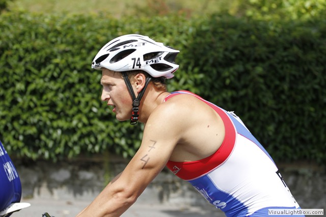
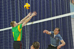

14.12.2012 Первенство Москвы по водному поло
14.12.2012 Первенство Москвы по водному поло14 декабря в бассейне ЦСКА ВМФ прошел очередной соревновательный день в рамках Первенства Москвы по водному поло среди юношей до 17 лет.
Фото: cska.ru
12.12.2012 Открытый турнир по дзюдо на Кубок Министерства обороны Российской Федерации
8 декабря в Москве прошел второй «Открытый турнир по дзюдо на Кубок Министерства обороны Российской Федерации».
Фото: cska.ru
03.12.2012 Памяти Дмитрия Гулевича
В Дворце спортивных единоборств прошло Открытое первенство СДЮШОР по дзюдо памяти Д.И. Гулевича. Предлагаем вашему вниманию лучшие моменты соревнований.
Фото: cska.ru
 01.12.2012 "Шаляпин русского футбола. Гагарин шайбы на Руси"
01.12.2012 "Шаляпин русского футбола. Гагарин шайбы на Руси"На Аллее славы ЦСКА возложили цветы к бюсту Всеволода Боброва, которому 1 декабря исполнилось бы 90 лет.
Фото: cska.ru
 19.11.2012 Дело Шевалье живет...
19.11.2012 Дело Шевалье живет...В Дворце спортивных единоборств ЦСКА завершилось Открытое первенство СДЮШОР ЦСКА памяти Шевалье Нусуева. Из когда-то маленького столичного мероприятия он вырос в представительный международный турнир.
Фото: Борис Бухтияров
19.11.2012 Соревнования по самбо в ЦСКА
В спортивном комплексе «Игровой» прошел открытый турнир по самбо памяти генерал-лейтенанта В.И. Панкратова.
Фото: cska.ru
13.11.2012 Кубок взят
В УСЗ «Лужники» завершился второй Кубок европейских наций по вольной, греко-римской и женской борьбе «Московские звезды». Борцы ЦСКА, как вольного, так и греко-римского стиля принесли медали в копилку сборной страны.
Фото: Борис Бухтияров, Мария Кулькова
12.11.2012 Подтвердили свой класс
В Дворце спортивных единоборств прошло открытое первенство СДЮШОР ЦСКА по кикбоксингу (семиконтакт).
Фото: Борис Бухтияров
30.10.2012 Условия, приближенные к боевым
На базе филиала ФАУ МО РФ ЦСКА (г. Геленджик) состоялся учебно-методический семинар по дисциплине армейский рукопашный бой.
Фото: cska.ru
15.10.2012 Памяти великих мастеров
В Дворце спортивных единоборств прошло открытое первенство ЦСКА по греко-римской борьбе памяти заслуженных мастеров спорта Александа Мазура и Владимира Росина. В соревнованиях приняло участие 190 спортсменов из 16 школ.
Фото: Борис Бухтияров
 12.10.2012 Начала сезон с победы!
12.10.2012 Начала сезон с победы!В начале октября в Кемерово был дан старт новому олимпийскому циклу по дзюдо – Чемпионат России среди мужчин и женщин, по итогам которого была обновлена национальная сборная.
Фото: cska.ru
12.10.2012 Этап Кубка России
При поддержке филиала ФАУ МО РФ ЦСКА (г.Геленджик) состоялся финальный этап на Кубок России по велоспорту-маунтинбайку в дисциплине «триал». Соревнования прошли на скалистом берегу реки Адерба.
Фото: cska.ru
26.09.2012 Офицеры улучшили результат. День второй.
Во второй день «Открытого кубка ЦСКА» по военно-прикладным видам спорта участники состязались в преодоление полосы препятствий и беге на 1000 метров. Также состоялось церемония награждения и закрытия турнира.
Фото: cska.ru
25.09.2012 Кубок ЦСКА по пейнтболу
В Центре специальной физической подготовки и выживания ЦСКА состоялся турнир по пейнтболу среди представителей филиалов спортивного клуба Армии. В спортивном пейнтболе лучшими стали армейцы из Ростова-на-Дону, а в прикладном - на первое место поднялись смоленские «стрелки».
Фото: cska.ru
 21.09.2012 Офицеры улучшили результат
21.09.2012 Офицеры улучшили результатВторой год подряд на базе 27-ой гвардейской мотострелковой бригады проводился «Открытый Кубок ЦСКА» по военно-прикладным видам спорта. Сильнейших выявляли в стрельбе, плаванье, метание гранаты и офицерском многоборье.
Фото: cska.ru
 13.09.2012 «Волна» на гребне успеха
13.09.2012 «Волна» на гребне успехаНа базе войсковой части города Калининграда состоялся чемпионат Балтийского флота по стрельбе из штатного оружия.
Фото: cska.ru
12.09.2012 С заданием справились
В швейцарской Лозане завершился чемпионат мира по триатлону среди военнослужащих СИЗМ. Представители вооруженных сил России показали хорошие результаты: мужская команда получила бронзу, а девушки стали четвертыми.
Фото: cska.ru
11.09.2012 Чтобы помнили
На Аллее Славы ЦСКА в торжественной обстановке открыли бюст прославленного советского боксера Вячеслава Лемешева.
Фото: cska.ru
10.09.2012 Первый в армии!
Спортсмены ФАУ МО РФ ЦСКА совместно со звездами Первого канала отправились в Наро-Фоминск, чтобы стать участниками акции «Первый в армии!», приуроченной к Дню танкиста.
Фото: cska.ru
04.09.2012 Чемпионат Москвы по дзюдо
В подмосковном Монино прошел международный турнир по регби, посвященный 100-летию создания Военно-воздушных сил Российской Федерации.
Фото: Борис Бухтияров
 03.09.2012 С юбилеем, ЦСК ВВС!
03.09.2012 С юбилеем, ЦСК ВВС!В эти выходные филиал ФАУ МО РФ ЦСКА Центральный спортивный клуб Военно-воздушных сил (г. Самара) отметил 20 лет со дня своего образования. С Днем рождения «летчиков» поздравили губернатор Самарской области Николай Меркушкин...
Фото: cska.ru
20.08.2012 Победа к юбилею
В подмосковном Монино прошел международный турнир по регби, посвященный 100-летию создания Военно-воздушных сил Российской Федерации.
Фото: Борис Бухтияров
15.08.2012 День физкультурника в Кронштадте
С 10 по 12 августа на базе Спортивного центра (морской и физической подготовки, г. Кронштадт), прошли ежегодные соревнования среди военнослужащих войсковых частей Ленинградской военно-морской базы и Кронштадтского военного гарнизона, посвящённые Дню физкультурника.
Фото: cska.ru
09.08.2012 Великая вернулась
В Москву из олимпийского Лондона вернулась саблистка Софья Великая. На главном спортивном форуме планеты она стала серебряной. По словам Сони, эту победу она посвятила своей семье, особенно любимой бабушке.
Фото: Борис Бухтияров
08.08.2012 Чемпионат ЦОВУ МО РФ по городошному спорту
8 августа на базе музея-заповедника «Коломенское» прошел чемпионат центральных органов военного управления Министерства обороны Российской Федерации по городошному спорту.
Фото: Венера Молдыбаева
07.08.2012 Капитан Михайлин
Вчера в Москву прилетел серебряный призер лондонской Олимпиады капитан Вооруженных Сил Российской Федерации Александр Михайлин.
Фото: Борис Бухтияров
07.08.2012 Высший пилотаж
В минувшую субботу в Центре специальной физической подготовки Центрального спортивного клуба Армии, в городе Балашиха прошел «Открытый теннисный турнир среди ветеранов вооруженных сил, посвященный 100-летию создания Военно-воздушных сил Российской Федерации».
Фото: Мария Кулькова
06.08.2012 Чемпионат ВС РФ по горному троеборью
В период с 25 по 29 июля 2012 г. на базе спортивного центра ФАУ МО РФ «Терскол» состоялся чемпионат Вооруженных Сил Российской Федерации по горному троеборью.
Фото: cska.ru
23.07.2012 Ножевой бой в Самаре
В период с 11 по 15 июля на базе ЦСК ВВС, (г.Самара) прошел учебно-методический сбор по дисциплине «Рукопашный бой с использованием клинкового и огнестрельного оружия».
Фото: cska.ru
16.07.2012 ПРЕСТИЖная победа
14 июля на конноспортивной базе Центрального спортивного клуба Армии прошел Открытый кубок ЦСКА. Несмотря на жару и раннее время начала соревнований, на трибунах собралось много любителей конкура.
Фото: Борис Бухтияров
11.07.2012 Снова первые!
В Астане завершилась IX Спартакиада дружественных армий государств-участников СНГ. Представляем вашему вниманию лучшие моменты соревнований.
Фото: cska.ru
10.07.2012 У фехтовальщиков назван состав
На очередной предолимпийской пресс-конференции на спортивной базе "Озеро Круглое" был назван состав сборной России по фехтованию, который выступит на предстоящих Олимпийских играх.
Фото: cska.ru
04.07.2012 Соревнования по гиревому спорту
На проходящей Спартакиаде дружественных государств-участников СНГ свое мастерство продемонстрировали спортсмены-гиревики.
Фото: cska.ru
03.07.2012 Дружба через спорт
В столице Казахстана Астане стартовала IX Спартакиада дружественных армий государств-участников СНГ. В этом году она посвящена 20-летию образования Вооруженных Сил республики Казахстан.
Фото: cska.ru
25.06.2012 День спорта
В Лужниках прошел XXIII Всероссийский олимпийский день.
Фото: Борис Бухтияров
18.06.2012 «Кубок Кремля» на армейской земле
В Москве на конно-спортивной базе ФАУ МО РФ ЦСКА прошел второй международный турнир по современному пятиборью «Кубок Кремля». Одним из организаторов соревнований выступило Министерство обороны РФ.
Фото: Борис Бухтияров
09.06.2012 Ножевой бой - настоящее искусство
В ЛФК ЦСКА прошел семинар по ножевому бою.
Фото: cska.ru
24.05.2012 Спартакиада кадетов завершилась
В Санкт-Петербурге завершился последний этап Спартакиады довузовских образовательных учреждений Министерства Обороны. Последним его аккордом стала блестящая победа хозяев из кадетского корпуса над командой Тверского СВУ.
Фото: Ирина Гагарина
22.05.2012 Спорт, армия и туризм
В минувшие выходные под Санкт-Петербургом состоялся первый Чемпионат Вооруженных Сил России по спортивному туризму в группе дисциплин «дистанция». Более двухсот участников испытали свои силы в двух видах программы – пешеходной и водной.
Фото: Ирина Гагарина
11.05.2012 «Кубок Победы»
В ЛФК ЦСКА проходит Всемирный Кубок чемпионов по футболу среди ампутантов «Кубок Победы-2012»
Фото: cska.ru
02.05.2012 Посвящение в юные армейцы
Накануне 89-летия ЦСКА 170 ребят вступили в ряды армейских спортсменов.
Фото: cska.ru
19.04.2012 Вода, вода, кругом вода
Завершился очередной этап Спартакиады центральных органов военного управления Минобороны России. На этот раз в бассейне ФАУ МО РФ ЦСКА встречались лучшие пловцы.
Фото: Венера Молдыбаева
17.04.2012 Мастер-класс на Неве
Успешным начинанием стала инициатива Управления физической подготовки ВС РФ по проведению учебно-тренировочных занятий среди военнослужащих. Так с 9 по 13 апреля в Санкт-Петербурге прошел мастер-класс «Рукопашный бой с использованием клинкового и огнестрельного оружия».
Фото: Ирина Гагарина
13.04.2012 Первые среди курсантов
В Санкт-Петербург завершился очередной этап Спартакиады общеобразовательных учреждений довузовской подготовки МО РФ. На этот раз встречались лучшие пловцы и самбисты Суворовских, Нахимовских училищ и кадетских корпусов России.
Фото: Ирина Гагарина
09.04.2012 Светлой памяти
В субботу 7 апреля в Звенигороде прошел международный турнир по дзюдо среди полиции и армии. Турнир был посвящен памяти сотрудников силовых струтктур, погибших при исполнение служебного долга.
Фото: Борис Бухтияров
 03.04.2012 Гладиаторы спортивных арен
03.04.2012 Гладиаторы спортивных аренВо Дворце спортивных единоборств состояся Открытый кубок ЦСКА по кикбоксингу в разделе «семи контакт», посвященный 89-летию Клуба.
Фото: Венера Молдыбаева
02.04.2012 Грация, красота, изящность.
Первенства ЦСКА по художественной гимнастике всегда проходят ярко и зрелищно, не стал исключением и очередной Турнир. Грация, красота, изящность – в одном флаконе!
Фото: Борис Бухтияров
28.03.2012 Легкая атлетика – королева спорта!
Два дня в легкоатлетическом манеже шло Открытое первенство СДЮШОР ЦСКА по легкой атлетике. На старт вышли бегуны и прыгуны в длину разных возрастов. Ребята показали прекрасные результаты.
Фото: Венера Молдыбаева
27.03.2012 Армия и спорт – всегда едины!
21-26 марта в УСК ЦСКА прошли соревнования по волейболу в рамках Спартакиады центральных органов военного управления Минобороны России.
Фото: cska.ru
 27.03.2012 Спартакиада юных воинов
27.03.2012 Спартакиада юных воиновВ Санкт-Петербурге завершилась Спартакиада общеобразовательных учреждений довузовской подготовки Министерства Обороны Российской Федерации. Представители Суворовских, Нахимовских училищ и кадетских корпусов России приняли участие в соревнованиях по лыжным гонкам и рукопашному бою.
Фото: cska.ru
27.03.2012 Турнир по регби
В воскресенье в легкоатлетическом манеже ЦСКА прошел турнир по регби – 13, посвященный Дню защитника Отечества, в котором приняли участие 7 команд вузов Минобороны России. Соревнования прошли в упорной борьбе.
Фото: Борис Бухтияров
 28.02.2012 Пейнтбол в ЦСКА
28.02.2012 Пейнтбол в ЦСКАВ минувшие выходные в Центре специальной физической подготовки и выживания ФАУ МО РФ ЦСКА состоится первый турнир по пейнтболу среди допризывной и призывной молодежи, посвященный Дню защитника Отечества.
Фото: Мария Кулькова
.jpg) 28.02.2012 Чемпионат России по легкой атлетике
28.02.2012 Чемпионат России по легкой атлетикеВ ЛФК ЦСКА завершился чемпионат России по легкой атлетике. Самые интересные моменты национального первенства в объективе нашего фотографа.
Фото: Мария Кулькова
.jpg) 24.02.2012 Турнир по мини-футболу
24.02.2012 Турнир по мини-футболуВ ЛФК ЦСКА проходит турнир по мини-футболу, посвященный Дню защитника Отечества. В манеже соревнуются команды из силовых ведомств страны.
Фото: Александр Бабин
.jpg) 24.02.2012 Открытый Кубок ЦСКА по конкуру
24.02.2012 Открытый Кубок ЦСКА по конкуруОткрытый Кубок по конкуру, посвященный Дню защитника Отечества прошел в ЦСКА. По традиции состязание собрало сильнейших спортсменов со всей России.
Фото: Борис Бухтияров
.jpg) 24.02.2012 Чемпионат ЗВО по армейскому рукопашному бою
24.02.2012 Чемпионат ЗВО по армейскому рукопашному боюВ поселке Алабино прошел чемпионат Западного военного округа по армейскому рукопашному бою среди органов военного управления, объединений, соединений и воинских частей.
Фото: УФП ВС РФ
.jpg) 21.02.2012 Первый этап спартакиады кадетов
21.02.2012 Первый этап спартакиады кадетовВ стрелковом тире Центрального спортивного клуба Армии прошли состязания по пулевой стрельбе в рамках спартакиады довузовских образовательных учреждений Министерства обороны Российской Федерации.
Фото: Мария Кулькова
.jpg) 21.02.2012 Традиционный турнир ЦСКА по боксу
21.02.2012 Традиционный турнир ЦСКА по боксу200 юных боксеров собрались во Дворце спортивных единоборств ЦСКА помериться силами на традиционном турнире, посвященном Дню защитника Отечества.
Фото: Мария Кулькова
 06.02.2012 Тренировка команды ЦСКА по вольной борьбе
06.02.2012 Тренировка команды ЦСКА по вольной борьбеБорцы вольного стиля готовятся к Кубку мира и чемпионату России, которые являются отборочными на Олимпиаду-2012.
Фото: Мария Кулькова
 16.12.2011 Открытое первенство ЦСКА по художественной гимнастике
16.12.2011 Открытое первенство ЦСКА по художественной гимнастикеСегодня в легкоатлетическо-футбольном комплексе ЦСКА стартовало Открытое первенство СДЮШОР ФБУ МО РФ ЦСКА по художественной гимнастике.
Фото: Венера Молдыбаева
 13.12.2011 Кубок Министерства обороны Российской Федерации
13.12.2011 Кубок Министерства обороны Российской ФедерацииПредлагаем вашему вниманию лучшие кадры с «Открытого турнира по дзюдо на Кубок Министерства обороны Российской Федерации»
Фото: Борис Бухтияров
.jpg) 06.12.2011 Турнир памяти Дмитрия Гулевича
06.12.2011 Турнир памяти Дмитрия ГулевичаВ минувшие выходные во Дворце спортивных единоборств ЦСКА состоялся Открытый Всероссийский турнир по дзюдо среди юниоров 1993-1995 г.р. памяти Дмитрия Гулевича. Соревнования собрали 130 спортсменов из 20 регионов страны.
Фото: Борис Бухтияров
.jpg) 18.11.2011 Первенство СДЮШОР ЦСКА
18.11.2011 Первенство СДЮШОР ЦСКАВ Дворце спортивных единоборств проходит открытое первенство СДЮШОР ЦСКА по вольной борьбе памяти первого президента Федерации детского спорта Ш. Нусуева.
Фото: Александр Бабин